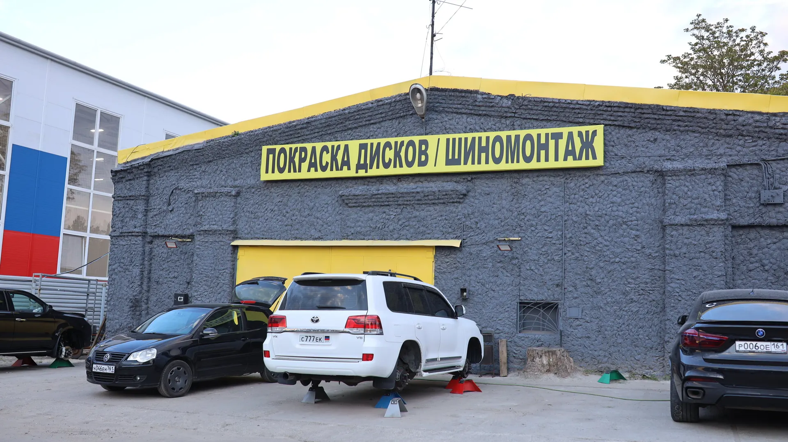
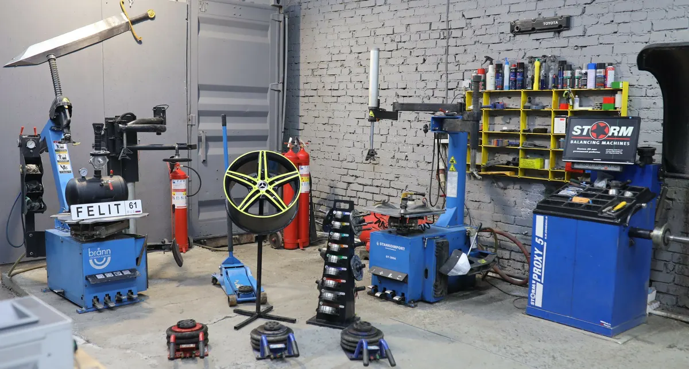
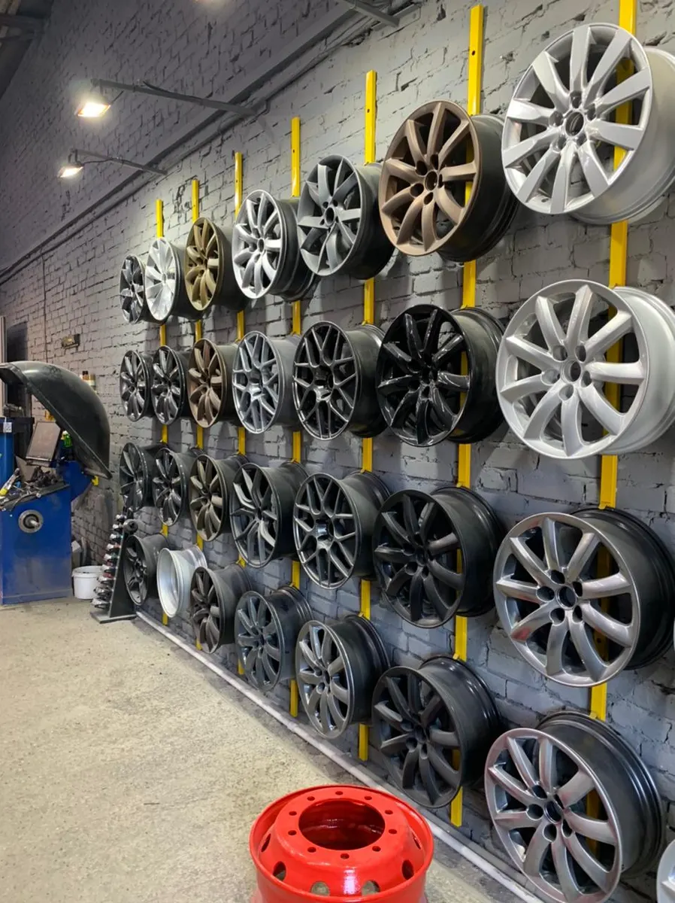
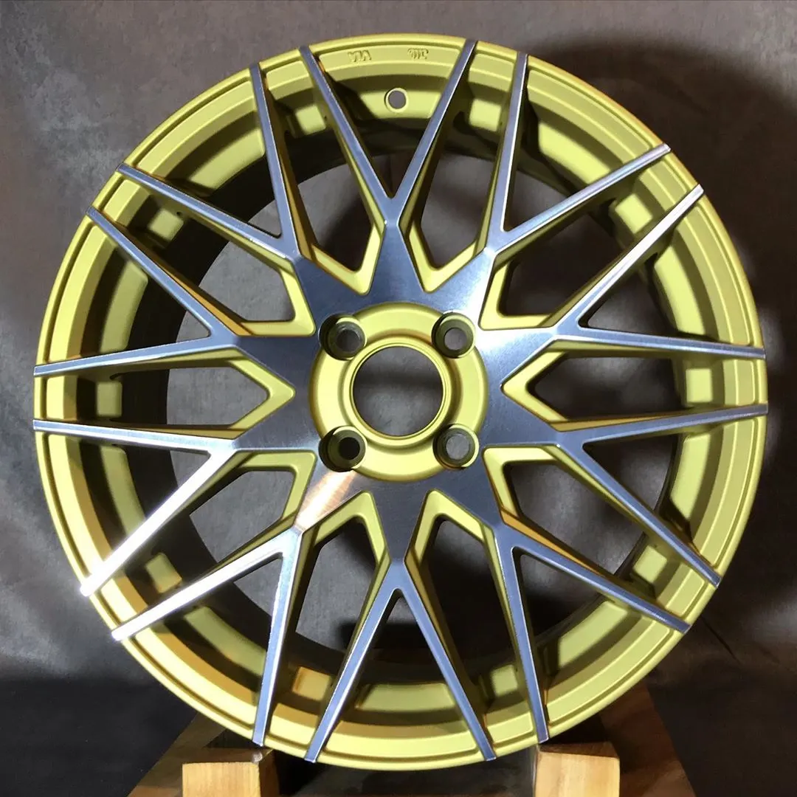

Покраска дисков · Ростов-на-Дону
Покраска дисков в Ростове-на-Дону
Цена за диск известна по радиусу: очистка, пескоструй и подготовка уже входят. Цвет и технология могут её менять.
- Пескоструй и подготовка входят в цену
- Помогаем подобрать цвет
- Рейтинг 5,0 на Яндекс Картах, 520 оценок

Что входит в покраску
Входит
- Очистка диска бережной смывкой
- Пескоструйная очистка
- Подготовка к окраске: затирка, устранение повреждений и выбоин
Отдельно, если нужно
- Цвет и технология покраски могут менять цену
- Алмазная проточка: отдельной строкой в прайсе
- Заправка кондиционера: отдельно
Цена известна заранее
Покраска одного диска по радиусу. Цвет и технология покраски влияют на цену.
Покраска диска, 1 шт.
- R13от 1 600 ₽
- R14от 1 800 ₽
- R15от 2 100 ₽
- R16от 2 400 ₽
- R17от 2 700 ₽
- R18от 2 900 ₽
- R19от 3 100 ₽
- R20от 3 300 ₽
- R21от 3 600 ₽
- R22от 4 000 ₽
Остальное
- Покраска R20 с алмазной проточкойот 6 500 ₽
- Покраска R21 с алмазной проточкойот 7 000 ₽
- Заправка и вакуумирование кондиционерадо 300 г, дальше 6 ₽ за грамм3 500 ₽
- Переобувка комплектауточнить
В цену покраски входят: очистка диска смывкой, пескоструйная очистка, подготовка к окраске (затирка, устранение повреждений и выбоин).
Как проходит покраска
- 01
Подбираем цвет
Показываем варианты и помогаем выбрать.
- 02
Очищаем диск смывкой
Снимаем старое покрытие бережно.
- 03
Пескоструй и подготовка
Затираем, убираем повреждения и выбоины.
- 04
Красим
Диск возвращается в выбранном цвете.



Что обещаем
Поможем подобрать цвет
Клиенты в отзывах пишут, что с цветом им помогли.
Исправим «восьмерки»
Правка дисков в одном месте с покраской.
Цена по радиусу видна до визита
Строка в прайсе, а не сюрприз в чеке.
Отзывы с Яндекс.Карт
«Сделали качественно, помогли подобрать цвет, исправили восьмерки и все равно это вышло в два раза дешевле чем новый комплект дисков!»
Валерий Мигунов · 5 ноября 2025
«Ребята мастера своего дела. Откатали, убрали бордюрку, покрасили. Привожу уже 3 комплект на покраску. Все на высшем уровне. Рекомендую.»
Vika · 19 июля
«Не первый обращаюсь к парням и снова ТОП по всем параметрам, результат превзошел ожидания, проконсультировали с цветом»
Фархад Велиханов · 19 марта
Отзывы с карточки на Яндекс.Картах, без правок.
Частые вопросы
Сколько стоит покраска диска?
От 1600 ₽ за R13 до 4000 ₽ за R22 за один диск. Цвет и технология покраски влияют на цену.
Что входит в цену?
Очистка смывкой, пескоструй и подготовка к окраске, включая устранение повреждений и выбоин.
Правите ли «восьмерки» на дисках?
Да, клиенты пишут об этом в отзывах. Состояние вашего диска уточните в WhatsApp.
Когда вы работаете?
Пн–Пт с 09:00 до 20:00, суббота с 09:00 до 18:00.
Запишитесь на удобное время
- Адрес
- Таманский пер., 2, стр. 4, Ростове-на-Дону
- Часы
- Пн–Пт 09:00–20:00, Сб 09:00–18:00
- Телефон
- +7 (928) 229-03-25